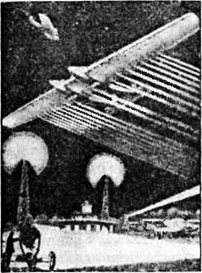
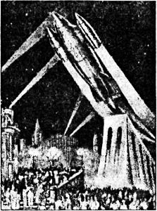

Ракетопланы Макса Валье
В 1924 году популяризацией идеи межпланетных путешествий занялся мюнхенский литератор и бывший пилот Макс Валье, который выпустил книгу «Полет в мировое пространство».
В своей книге Валье, делая критический обзор различных способов метания аппарата в космос с помощью пушки и центробежной машины, доказывает преимущество ракет на жидком топливе и, основываясь на работах Оберта, дает свое видение эволюции ракетной техники.
На начальном этапе Макс Валье предлагал превратить обычный самолет в ракетный путем простой замены двигателей внутреннего сгорания ракетными. Он утверждал, что в дальнейшем, постепенно совершенствуя двигатели и сокращая площадь несущих поверхностей, можно будет создать из такого самолета пилотируемую космическую ракету.
Первый проект, описанный в книге, представляет собой обычный для того времени аэроплан с винтом, большими крыльями и двумя ракетами-ускорителями, закрепленными под ними. Второй аэроплан имеет четыре ракетных двигателя. Третий уже лишен винта, крылья имеют меньшую площадь, но недостаток подъемной силы компенсируется шестью ракетными двигателями.
Далее фантазия Валье движется по накатанной колее, умножая элементы конструкции и превращая обычный аэроплан в настоящего ракетного монстра. Вот перед нами реактивный аэроплан с двумя фюзеляжами и восемнадцатью ракетными двигателями (!). А вот наконец и конечный продукт — двухступенчатый межпланетный корабль, космическая ступень которого точь-в-точь походит на ракету Оберта, а стартовая представляет собой доведенный до полной неузнаваемости аэроплан с толстыми короткими крыльями и ракетными ускорителями.


Валье приводит результаты своих расчетов, из которых следует: чтобы ракета получила скорость, равную скорости извержения из нее газов, топливо должно составлять 63,21 % от полного ее веса. Если скорость ракеты желательно иметь в два или три раза больше, то вес горючего составит соответственно 86,46 % и 95,2 % полного ее веса. При порохе, который дает скорость истечения лишь 2500 м/с, вес горючего получается весьма большой. Путь применения в качестве горючего смеси водорода с кислородом (скорость истечения — 5000 м/с) хотя и заметно облегчит ракету, однако будет дорогим и опасным. Поэтому Валье рекомендовал ограничиться опытным полетом на высоту 250–300 километров, что потребовало бы меньших затрат.
Чтобы сложный материал лучше усваивался неподготовленным читателем, популяризатор из Мюнхена снабдил свой труд огромным количеством впечатляющих иллюстраций. Без них, увы, книга Валье не выглядит чем-то значительным, являясь, по сути, пересказом чужих идей.
На этих иллюстрациях мы видим этапы будущего полета пассажирской ракеты на Луну. Вот старт ракеты с Земли, со специально подготовленного трамплина. Затем показан момент отделения от ракеты первой ступени-самолета, который, как следует из пояснительного текста, поднял ее на высоту около 6 километров; сама же ракета после этого продолжает двигаться под действием собственного двигателя. На следующем рисунке изображен ее полет между Землей и Луной под влиянием инерции и сил тяготения. Показан момент, когда еще идет нарастание скорости и пассажиры испытывают перегрузку (согласно тексту — 4,5 g). Далее мы видим свободный полет людей внутри гондолы в условиях невесомости. На другой картинке видно, что при свободном полете ракеты пассажиры могут выходить в скафандрах в безвоздушное пространство и лететь рядом с ракетой. И, наконец, на следующем рисунке показан обратный спуск ракеты на Землю: сначала при помощи парашюта, а потом с использованием тормозящей реакции выхлопных газов.